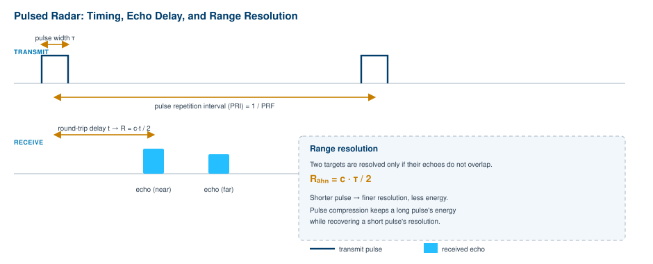
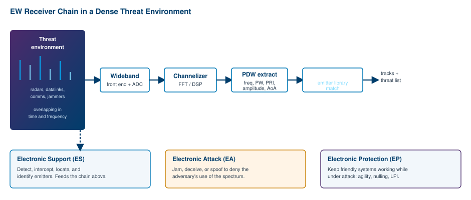
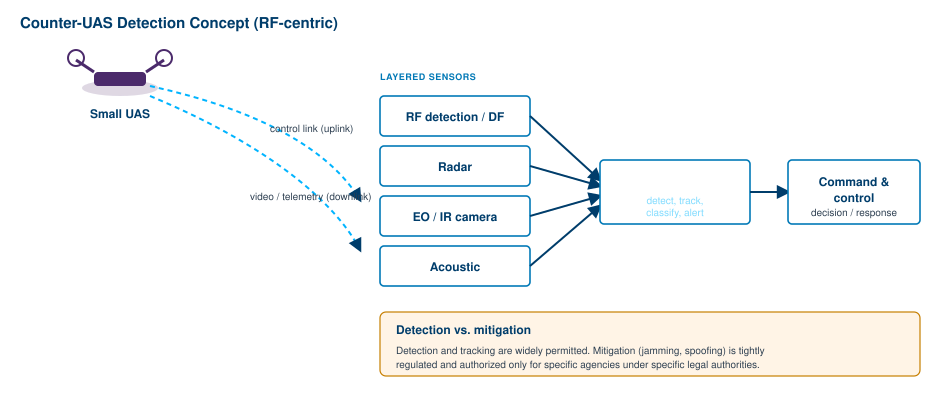

Defense and aerospace gave radio frequency engineering some of its hardest problems, and solving those problems pushed the whole field forward. Radar drove the first generation of microwave components. The contest over the electromagnetic spectrum produced the receivers, signal processing, and wideband instruments that later filtered down into commercial wireless. This chapter is a conceptual, unclassified tour of how RF is used in defense and aerospace today. It covers the physics that every engineer in the field shares, not operational tactics or targeting detail.
The thread running through all of it is the same one that runs through the rest of this book. Energy radiates, travels, reflects, and is received, and whoever measures and controls that energy best has the advantage. The applications here just raise the stakes. A missed echo, a jammer that gets through, a signal that goes uncaptured: each can decide an outcome. We will look at radar fundamentals, electronic warfare, signals intelligence, counter-unmanned-aircraft systems, and the wideband capture and record/playback tools that tie the modern workflow together.
Radar stands for radio detection and ranging, and the name describes the job. A radar transmits RF energy, listens for the small fraction that reflects off a target, and uses the timing and character of that echo to learn where the target is and how it is moving. The simplest form is pulsed radar: send a short burst, then listen. Because radio waves travel at the speed of light, the round-trip delay of the echo gives the range directly. If the echo returns after a time t, the target is at a range R = c·t / 2, where c is the speed of light and the factor of two accounts for the wave going out and coming back. [1] Verify before publication.
How well a radar can separate two targets that lie at slightly different ranges along the same line is called range resolution. For a simple pulsed radar the resolution is set by the pulse width: two echoes can be told apart only if they do not overlap in time, which gives a range resolution of R_res = c·τ / 2, where τ is the pulse width. [1] Verify before publication. This creates one of the central trade-offs in radar design. A long pulse carries more energy, which means more detection range, but it smears resolution. A short pulse gives fine resolution but carries little energy, so it sees less far. Engineers escape the trade with pulse compression: they transmit a long pulse whose frequency or phase is modulated (a chirp is the classic example), then compress the received echo in processing. The result keeps the energy of a long pulse and recovers the resolution of a short one.

The amount of energy that returns is described by the radar range equation, which relates received power to transmitted power, antenna gains, the target's radar cross section (a measure of how strongly it reflects), and range. The key feature is that received power falls off as the fourth power of range, because the wave spreads on the way out and again on the way back. Doubling your detection range therefore costs roughly sixteen times the transmitted power, all else equal, which is why radar designers fight so hard for antenna gain, low-noise receivers, and clever processing rather than simply turning up the transmitter.
Motion adds another dimension. A moving target shifts the frequency of the echo through the Doppler effect, and measuring that shift separates moving targets from stationary clutter such as ground, sea, and weather. Pulse-Doppler processing, which sorts returns by both range and Doppler frequency, is the backbone of modern surveillance and tracking radar. Radar bands run from HF up through the microwave region, with the common letter bands (L, S, C, X, Ku, Ka) each trading range, resolution, antenna size, and atmospheric loss differently. Lower bands see farther and through weather; higher bands give finer resolution from smaller antennas.
The biggest architectural shift of the last few decades is the move to electronically scanned arrays. Instead of mechanically swinging a dish, an active electronically scanned array (AESA) uses hundreds or thousands of small transmit/receive modules whose phases are controlled individually, so the beam can be steered in microseconds and even split to do several jobs at once. AESA radars depend heavily on the RF building blocks covered earlier in this book: stable oscillators, low phase noise, precise frequency synthesis, and careful calibration across many channels.
Going Deeper - Pulse compression and the time-bandwidth product
Pulse compression works because resolution is set by bandwidth, not by pulse length on its own. A long pulse swept across a wide frequency band (a chirp) has a large time-bandwidth product. Matched-filter processing on receive collapses that long, wide-band pulse into a narrow spike whose width is set by the bandwidth, not the original pulse length. You get the energy of the long pulse and the resolution of a short one, at the cost of more signal processing. This is the same principle that lets synthetic aperture radar build detailed images from a small moving antenna.
For a deeper treatment of waveforms, antennas, clutter, and detection theory, see the companion volume The Nuts and Bolts of Radar Systems, which is devoted entirely to this subject. The point to carry forward here is that radar is the original RF measurement problem, and the same instruments used to characterize radar signals, signal generators, spectrum analyzers, and wideband digitizers, are the instruments described throughout this book.
Electronic warfare (EW) is the contest for control of the electromagnetic spectrum. If radar is about using the spectrum to sense, EW is about denying that use to an adversary while protecting your own. The field is usually divided into three interdependent mission areas. [2] Verify before publication. Electronic support (ES, sometimes called electronic support measures) is the listening half: detecting, intercepting, locating, and identifying emitters in the environment. Electronic attack (EA) is the active half: radiating energy to jam, deceive, or spoof so the adversary cannot rely on the spectrum. Electronic protection (EP) keeps friendly systems working while under attack, through techniques such as frequency agility, antenna nulling, and low-probability-of-intercept waveforms.
The starting point for all of it is the threat environment, and that environment is dense. A modern operating area can contain hundreds of emitters, radars, datalinks, communications, navigation aids, and other jammers, overlapping in both time and frequency. An EW receiver has to take that mess, pull it apart, and present a clean, current picture of who is transmitting what and from where. Figure 13.2 sketches the chain that does this.

A wideband front end and high-speed digitizer pull in a large slice of spectrum at once. A digital channelizer breaks that slice into many parallel channels so simultaneous signals can be handled at the same time. From each detected pulse the system extracts a pulse descriptor word, a compact record of frequency, pulse width, pulse repetition interval, amplitude, and angle of arrival. A deinterleaving stage then sorts the jumble of overlapping pulses back into individual emitters, and a comparison against an emitter library identifies what each one is. The output is a live threat picture that feeds the attack and protection functions.
What is driving the field today is a push for more bandwidth, faster reaction, and far smaller packages. Cognitive and adaptive EW techniques use signal processing and machine learning to recognize and respond to waveforms the system has never seen before, rather than relying only on a fixed library. At the same time, the industry is working hard to shrink size, weight, and power so that EW capability can ride on small, unmanned, and rotary-wing platforms instead of only large dedicated aircraft. [3] Verify before publication. The electronic warfare market reflects the priority: one estimate puts it growing from about US$18.9 billion in 2024 toward roughly US$28 billion by 2033. [2] Verify before publication. Behind every one of these systems sits the RF measurement problem this book is about, because you cannot jam, deceive, or protect against a signal you cannot first measure accurately.
Signals intelligence (SIGINT) is the discipline of gathering intelligence from transmitted signals. It overlaps with electronic warfare in its receivers and antennas, but its purpose is different: EW acts on the spectrum, while SIGINT studies it to produce understanding. SIGINT is conventionally divided into two branches. [4] Verify before publication. Communications intelligence (COMINT) deals with signals that carry messages: voice and data links that contain speech or text. Electronic intelligence (ELINT) deals with signals that do not carry messages, primarily the emissions of radars and other non-communications systems, characterized by their technical parameters rather than their content.
The technical task in both cases is to detect a signal, measure its parameters, often locate its source, and catalog it. For ELINT the parameters of interest are the same ones an EW receiver extracts: frequency, bandwidth, pulse width, pulse repetition interval, modulation, and scan pattern. Building a library of these technical fingerprints lets analysts recognize a given system whenever it transmits again. For COMINT the workflow adds demodulation and decoding so the underlying message format can be understood. In both branches, geolocation, working out where an emitter physically sits, is a recurring need, and it is usually solved by measuring angle of arrival from one or more sites or by timing differences across separated receivers.
The technology trend in SIGINT mirrors the rest of RF: more bandwidth, more digital processing, more automation. Modern systems lean on wideband digital receivers, software-defined waveform processing, and multi-source fusion to handle the volume, with AI increasingly used to triage and prioritize what a human analyst should look at. [4] Verify before publication. The market is concentrated in regions with high defense spending, and ELINT in particular has grown as electronic environments have become more complex and forces move toward integrated, end-to-end systems that combine sensing, processing, analytics, and emitter-database management. [4] Verify before publication.
A note on scope: everything here is at the level of physics and engineering. How SIGINT is collected against specific targets, and the legal frameworks that govern it, are outside the subject of this book. The takeaway for an RF engineer is that SIGINT is, at bottom, a very demanding measurement problem. It rewards sensitive low-noise receivers, wide instantaneous bandwidth, accurate frequency and timing references, and the ability to capture signals faithfully for later analysis, which is exactly where the record/playback tools in the last section come in.
Few RF problems have grown as fast as countering small unmanned aircraft systems. Cheap, capable drones are now widely available, and a counter-UAS (C-UAS) system is technology built to detect, track, and, where legally authorized, mitigate the threat they pose. The market reflects the urgency, with one projection putting C-UAS growth from roughly US$6.6 billion in 2025 toward more than US$20 billion by 2030 at a compound annual rate above 25 percent. [5] Verify before publication. Policy is moving too. In the United States, the National Defense Authorization Act for fiscal year 2026 expanded mitigation authorities and set up a joint task force to coordinate the national response to small-drone threats. [5] Verify before publication.
Detection uses several sensing methods because no single one is reliable on its own. Radar can see a drone but may struggle to separate a small, slow target from birds and clutter. Electro-optical and infrared cameras give visual confirmation but need a cue and good visibility. Acoustic sensors are short range. The RF method, the one most relevant to this book, listens for the radio links a drone uses: the control uplink from the operator and the video or telemetry downlink back to them. By detecting and direction-finding on those links, an RF sensor can often detect a drone, and sometimes its operator, before it is even visible, and can do so passively without radiating anything itself. Figure 13.3 shows the concept of a layered sensor suite feeding a fused picture.

Because each sensor has blind spots, modern C-UAS systems fuse them. Sensor fusion combines radar tracks, RF detections, and camera imagery into a single picture, using the strengths of each to cover the weaknesses of the others, and increasingly using AI to classify what is a drone and what is not. The hardest part is often not seeing something but deciding, fast and with confidence, that a given track is a hostile drone rather than a hobbyist, a bird, or a passing aircraft.
Mitigation is a separate matter from detection, both technically and legally. RF techniques to defeat a drone include jamming its control and navigation links and spoofing its satellite-navigation receiver so it loses position. These are powerful, but radiating jamming energy is tightly regulated, because it can interfere with aviation, communications, and emergency systems, and the authority to use it is limited to specific agencies under specific legal conditions. Detection and tracking, by contrast, are far more widely permitted. For the RF engineer the important distinction is clear: building a sensitive, accurate RF detector is an open and growing field, while mitigation lives inside a legal framework that this book does not attempt to navigate.
Going Deeper - Why RF detection is attractive
An RF drone detector has a property the other sensors lack: it can be entirely passive. A radar must transmit, which reveals its own position and consumes power. A passive RF sensor only listens, so it gives nothing away, sips power, and can often detect a drone at the moment it powers up its control link, sometimes before the aircraft has even left the ground. The catch is that a drone flying a fully autonomous, pre-programmed route with its radios silent emits nothing to detect, which is exactly why fusion with radar and optical sensors matters.
The common thread across radar, EW, SIGINT, and C-UAS is that the signals of interest are wide, fast, and fleeting. Important events often last only milliseconds while spanning hundreds of megahertz or several gigahertz of bandwidth. [6] Verify before publication. You cannot fix what you cannot see, and increasingly you cannot understand a complex RF environment unless you can capture all of it, faithfully, and replay it on demand. That is the role of wideband capture and record/playback systems.
The idea is straightforward and powerful. A wideband receiver digitizes a large slice of spectrum as in-phase and quadrature (I/Q) samples and streams those samples to storage without gaps. Later, the same data can be played back through an RF generator to recreate the original environment on the bench, exactly and repeatably. This turns a one-time, uncontrolled, real-world environment into a laboratory signal you can run against a system under test as many times as you like. An EW receiver, a radar, a C-UAS sensor, or a SIGINT processor can be developed and tested against the same recorded scenario over and over, so engineers can iterate on algorithms and hardware with a stable reference instead of chasing live conditions that never repeat.
The engineering challenge is sustained data rate. Capturing a wide band without gaps generates an enormous, continuous flow of samples, and the system has to move that flow from digitizer to storage with no dropouts. That demands deterministic low-latency data paths, direct memory access that keeps the processor out of the way, and storage fast enough to absorb the stream for the full length of the recording. [6] Verify before publication. Recent commercial systems illustrate the scale: solutions now offer on the order of 500 MHz to multiple gigahertz of instantaneous bandwidth for record and playback, and some streaming and recording architectures pair wideband analyzers with high-speed storage to sustain very high data rates over long captures. [6] Verify before publication. Even handheld instruments have moved in this direction, with field analyzers offering wide I/Q streaming for gap-free capture in the field. [6] Verify before publication.
For the practitioner, record/playback closes the loop between the field and the bench. Capture a real environment once, bring it back to the lab, and you can characterize it, test against it, and design to it with full repeatability. Real-time spectrum analysis, which captures and analyzes signals continuously rather than sweeping past them, is the natural companion technology, because catching a short, infrequent, or hopping signal in the first place requires gap-free capture. For a fuller treatment of how real-time analyzers capture transient and agile signals, see the companion volume on real-time spectrum analysis (the RTSA book). Together, real-time capture and record/playback give defense and aerospace engineers what every section of this chapter ultimately needs: an accurate, repeatable hold on signals that are too wide, too fast, and too brief to study any other way.
BNC in Practice - Instruments for the defense RF bench
The work in this chapter rests on a handful of instrument categories covered throughout this book: low-phase-noise signal generators to create radar and threat waveforms, spectrum and real-time analyzers to measure dense environments, and wideband digitizers with record and playback to capture and replay them. Berkeley Nucleonics builds RF and microwave instruments in these categories. Match instantaneous bandwidth, frequency coverage, phase noise, and sustained record rate to your application, and verify the specifics against the current datasheet before you commit.
Take it interactively. The quiz lives on its own page with hidden answers - write your attempt first (even four characters works), then reveal. Self-graded. About 10 minutes.
Or read the questions and answers inline below (preserved for print and offline use).
[1] Pulsed-radar range relation R = c·t / 2 and range resolution R_res = c·τ / 2, with the pulse-width vs. range trade-off and pulse compression. Radar measurement fundamentals (e.g., Tektronix, Radartutorial). Verify before publication.
[2] Electronic warfare mission areas (ES/EA/EP) and electronic-warfare market estimate (US$18.9B in 2024 toward ~US$28B by 2033). Industry overviews and market forecasts. Verify before publication.
[3] Trend toward reduced size, weight, and power in EW to extend spectrum capability to small and unmanned platforms; cognitive/adaptive EW. Defense electronics industry sources. Verify before publication.
[4] SIGINT branches (COMINT vs. ELINT), wideband digital receivers, software-defined processing, multi-source fusion, AI triage, and ELINT market share. Signals intelligence market and industry references. Verify before publication.
[5] Counter-UAS market projection (~US$6.6B in 2025 to >US$20B by 2030, CAGR above 25%) and U.S. FY2026 NDAA C-UAS mitigation authorities and joint task force. Market reports and policy summaries. Verify before publication.
[6] Wideband RF record/playback bandwidths (hundreds of MHz to multiple GHz), sustained-data-rate architecture requirements, ultra-wideband streaming and recording, and handheld wide I/Q streaming. Test-and-measurement vendor materials (e.g., NI, Keysight, Averna). Verify before publication.